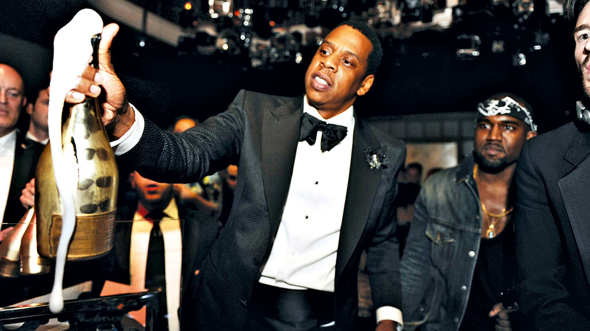
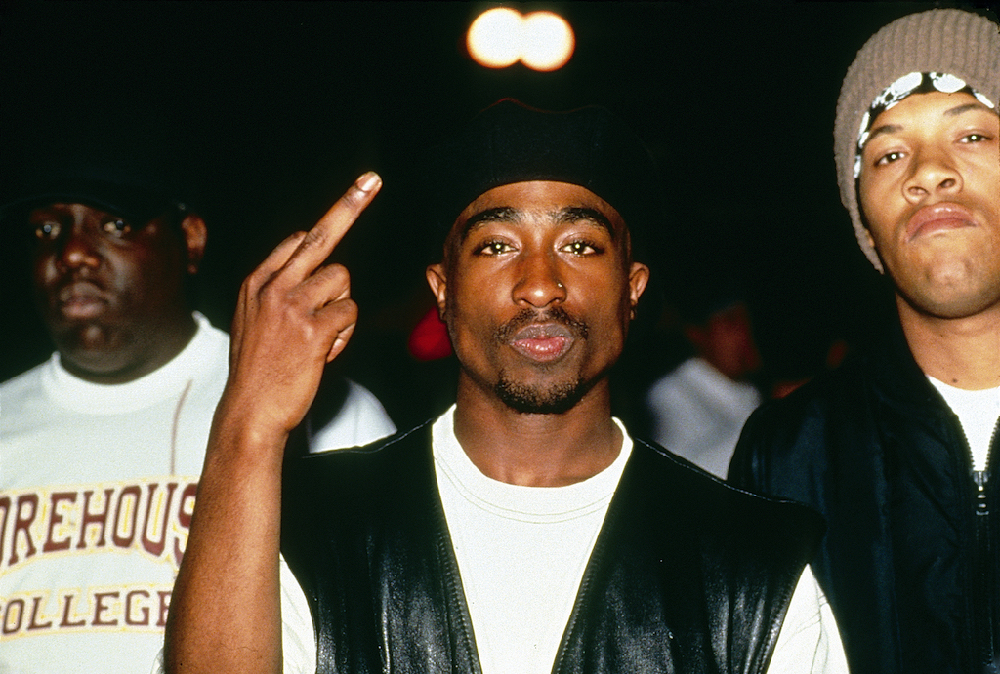

15 de maio de 2023
Top 5 melhores cantores de rap
Esse site tem como princípio mostrar os 5 melhores rapers de todos os
tempos!
- Eminem
Eminem é um fenômeno musical que transcende gêneros e definições. Com
seu talento inegável, ele conquistou o mundo com sua habilidade única
de contar histórias e expressar emoções através das letras de suas
músicas. Sua destreza lírica é simplesmente extraordinária, combinando
habilidade técnica com um fluxo de palavras impecável. Ele é conhecido
por sua honestidade crua e abordagem franca, abordando temas profundos
como sua luta contra a adversidade, as complexidades da vida e suas
batalhas internas. Eminem tem a capacidade de transmitir sua própria
vulnerabilidade de maneira catártica, conectando-se com milhões de
ouvintes em todo o mundo.
- Jay-Z

Jay-Z é um rapper, empresário e produtor musical americano. Ele nasceu
em 1969 no Brooklyn, Nova York. Jay-Z é conhecido por ser um dos
artistas de hip-hop mais influentes e bem-sucedidos de todos os
tempos. Ele lançou vários álbuns aclamados, incluindo "Reasonable
Doubt" e "The Blueprint". Além da música, Jay-Z fundou a Roc-A-Fella
Records e tem diversos investimentos em moda, tecnologia, bebidas
alcoólicas e esportes. Ele também é reconhecido por seu ativismo
social e político, defendendo os direitos civis e abordando questões
sociais. Com 23 prêmios Grammy, ele é um dos artistas mais premiados e
foi incluído na lista das 100 pessoas mais influentes da Time. Em
resumo, Jay-Z é um ícone do hip-hop, um empresário de sucesso e um
ativista comprometido.
- 2Pac

Tupac Shakur foi um rapper, ator e ativista americano que se tornou
uma figura emblemática do hip-hop nos anos 90. Ele abordou questões
sociais e políticas em suas letras, refletindo a realidade das
comunidades marginalizadas. Com uma carreira solo de sucesso, seus
álbuns como "2Pacalypse Now" e "All Eyez on Me" alcançaram grande
popularidade. Tupac também atuou em filmes como "Juice" e "Poetic
Justice". Ele era um ativista comprometido com a igualdade, justiça
social e direitos civis, usando sua plataforma para trazer à tona
questões importantes. Infelizmente, Tupac foi assassinado em 1996,
deixando um legado duradouro como um dos maiores artistas do hip-hop e
um ícone lendário. Sua música e mensagem continuam inspirando artistas
e ativistas até hoje.
- 50 Cent
50 Cent, cujo nome real é Curtis James Jackson III, é um rapper, ator
e empresário americano. Ele ganhou destaque com o lançamento do álbum
"Get Rich or Die Tryin'" no início dos anos 2000. Suas músicas
exploram temas como violência de rua e superação pessoal. Além da
música, ele fundou a gravadora G-Unit Records e expandiu seus negócios
para moda, filmes, séries de TV e até mesmo uma marca de vodka. Ele
também atuou em filmes como "Get Rich or Die Tryin'" e na série de TV
"Power". 50 Cent é conhecido por sua carreira na música e como
empresário de sucesso.